今天是巴黎奥运会第12个比赛日，中国队以22块金牌的成绩暂列金牌榜第2位。
在恭祝我国奥运健儿不断刷新纪录的同时，其他地方的观众也为他们自己选手的突破感到高兴。
这不，菲律宾体操选手尤洛在短短3天时间里勇夺2枚金牌，打破该国奥运会百年参赛男子项目0金牌的历史。
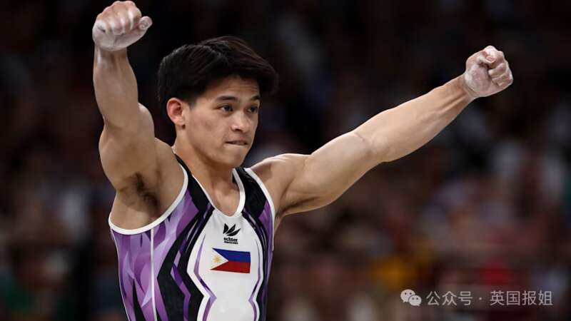
成为菲律宾全民英雄的尤洛不仅收获巨额奖金，还拿到私人商家赠送的海量礼物，其中不仅有终身免费炒饭、拉面享用，还有终身免费肠窥镜和结肠镜检查。
其他国家与地区这样独树一帜的猎奇奖品也不在少数，看过之后让人高呼开眼了… …
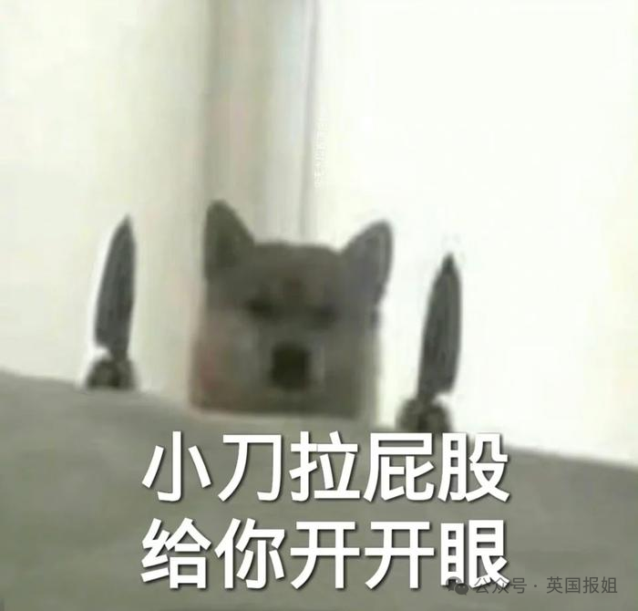
作为东南亚国家里最早一个参加奥运会及赢得奖牌的国家，菲律宾其实早在1924年就派出选手参加夏奥会。但在此后的近100年里，菲律宾选手都未能站上奥运会的最高领奖台。
直到2020年东京奥运会，举重选手迪亚兹才为菲律宾获得有史以来第一块奥运女子项目的金牌。
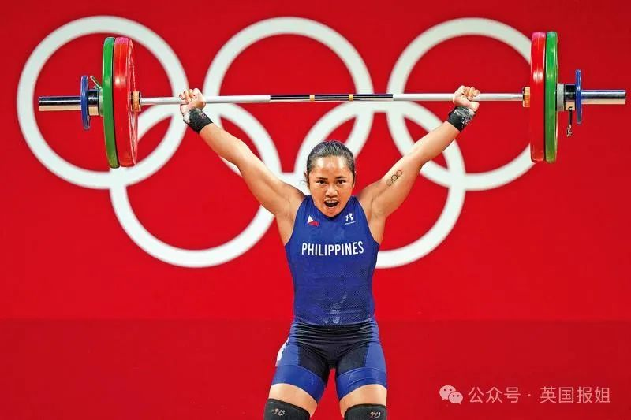
而在今年8月3日的巴黎奥运会男子自由体操比赛中，24岁的卡洛斯‧尤洛（Carlos Yulo以下简称尤洛）勇夺该项目的金牌。之后，他又在8月4日的男子跳马项目中再次摘金。
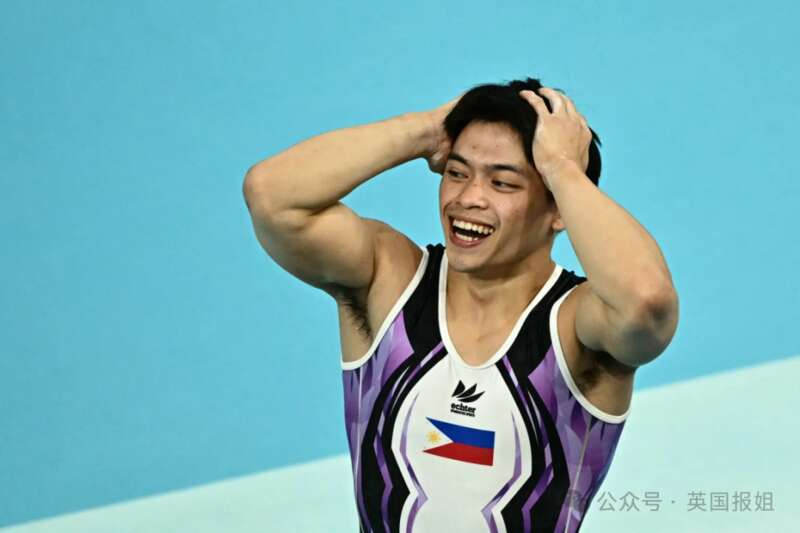
尤洛不仅成为菲律宾有史以来的第一位奥运会男子项目金牌获得者，还一连两天持续夺金。这也让该国历史上的金牌总数，直接翻了倍。
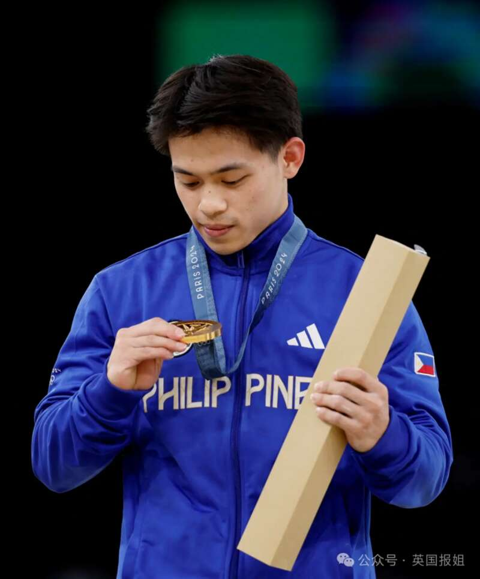
为了感谢尤洛为菲律宾带来值得记入史册的骄傲成绩，菲律宾全国上下集体给这位国民英雄送上了超值大礼包，还举办各种庆祝活动。
菲律宾政府给予尤洛共计17.3万美元（约124万rmb）的奖励，菲律宾众议院额外又加赠10.3万美元（约73.9万rmb）的现金奖励。
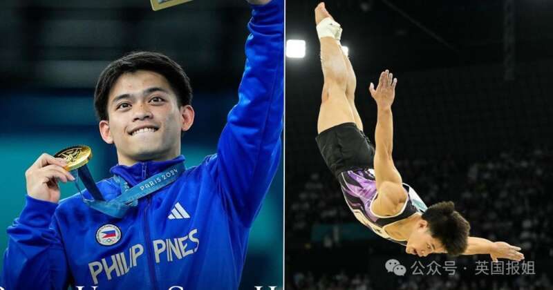
首都马尼拉的一家房地产公司，赠送给尤洛一套价值55.2万美元（约396万rmb）的三居室高级公寓。
菲律宾一家连锁咖啡馆声明会给所有和尤洛（Carlos Yulo）重名、或者名字中带有卡洛斯和尤洛的幸运儿提供免费奶昔。另一家酒吧则官宣，只要名字开头有C字母的人都可以免费喝鸡尾酒。
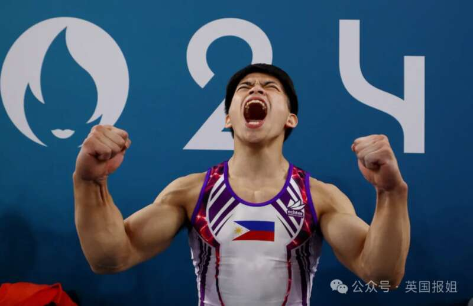
一连多天的庆祝活动让菲律宾全国都沉浸在尤洛带来的喜悦中。被这股庆祝氛围感染的其他赞助商，也各尽所能送出自家最值得拿出手的礼物。
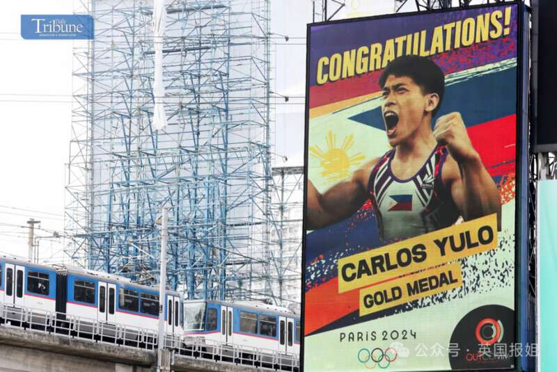
菲律宾的棉兰老岛大学，宣布直接赠送尤洛学分，让他免试拿学位。
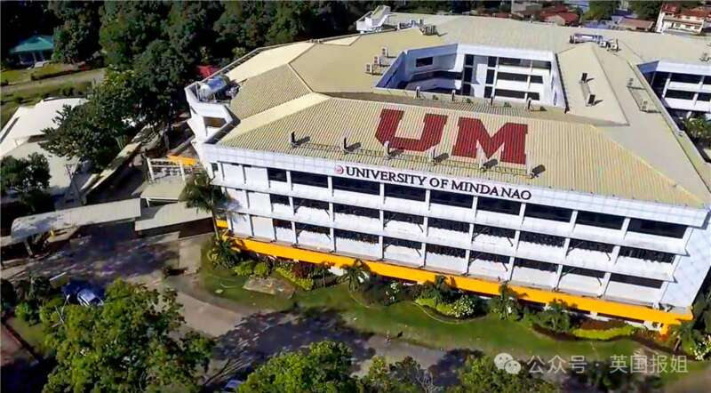
棉兰老岛大学当地一家餐厅承诺会给尤洛提供终身免费的点餐服务，今后只要他到店就能随意享用拉面、炒饭、意面等套餐。
某修车行还承诺，会给尤洛的代步车提供一套崭新的车头灯和雨刮器。
一名婚礼摄影师也承诺，尤洛未来的婚纱跟拍全部由他提供，额外还会免费赠送修图和选片服务。
一名二手手机商人也宣布会承包尤洛今后所有的手机壳和贴膜。
最炸裂的是一名消化科大夫则表示，他会给尤洛提供终身免费的肠镜检查服务。
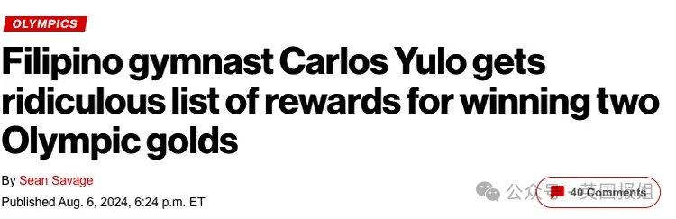
面对这份五花八门的冠军大礼包，不少网友表示礼品清单上杂乱无序的程度，既像是AI随机生成的抽象作品，又像是经营游戏捡的充值礼包。他们实在想不到如何充分使用这些礼品，所以建议尤洛写份详细攻略。
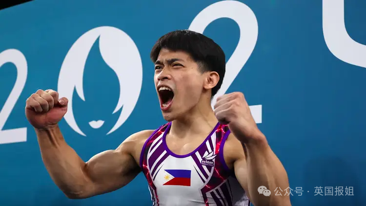
类似这样赞助商想送什么送什么的情况不只发生在菲律宾，甚至还有夺金运动员下了赛场就进牛棚，挑选赞助商送的奶牛… …
纵观全球的奥运金牌奖金制度，中国香港和新加坡以金额最高、赞助商最多而荣登冠亚军。
在本届奥运会开幕前，中国香港政府方面就宣布会对中国香港奥运代表队获得金牌的选手奖励600万港元（约552万rmb）、银牌和铜牌选手分别奖励300万港元（约276万rmb）和150万港元（约138万rmb）。
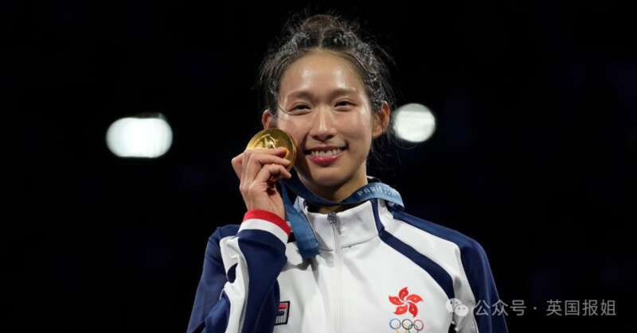
江旻憓在女子重剑个人赛中为香港赢得了本届奥运首枚金牌新加坡政府则会提供冠军100万新元（约540万rmb）、亚军50万新元(约270万rmb)、季军25万新元（约135万rmb）的奖金。
在各国的众多赞助商中，香港赛马会更是壕无人性的给奥运比赛中获得前8名的选手，分别提供37.5—600万（约34.5—552万rmb）港元不等的奖金。
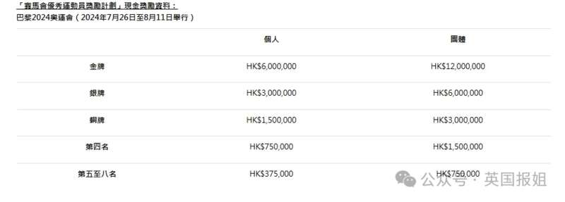
图源：香港赛马会除了真金白银外，不少国家的赞助商在颁发礼品时也展露出任性又可爱的另一面。
伊拉克某汽车代理商在奥运赛前就提出，会给代表国家出征的举重运动员阿里·阿马尔·亚西尔提供一辆汽车和土地。
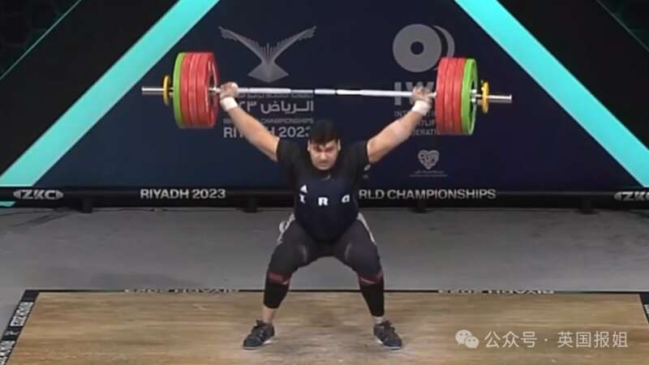
日本农协一直以来都会给各项赞助赛事的前三名选手赠送大米，奥运冠军大概是10吨大米、亚军则是6吨大米、季军约为3吨大米。
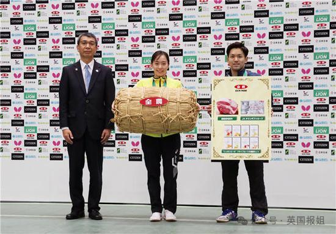
马来西亚的某食品公司会为奥运冠军提供一年的外卖服务。当地另一家饮料商则提供冠军，终身免费拉茶喝到爽。
曾经获得东京奥运会标枪项目冠军的印度选手拉杰·乔普拉，拿到当地航空公司提供的一年免费商务舱的奖励。
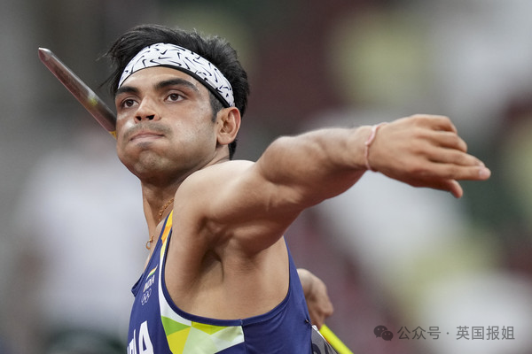
另一位在北京奥运会上夺金的印度射击选手阿比纳夫·宾德拉，则获得终身铁路一等座的特权。
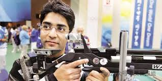
在东京奥运会上夺得羽毛球女子双打项目金牌的印尼选手阿皮里安尼·拉哈尤和格雷西亚·波莉，拿到当地赞助商赠送的5头奶牛、一家肉串餐厅和一套新房。
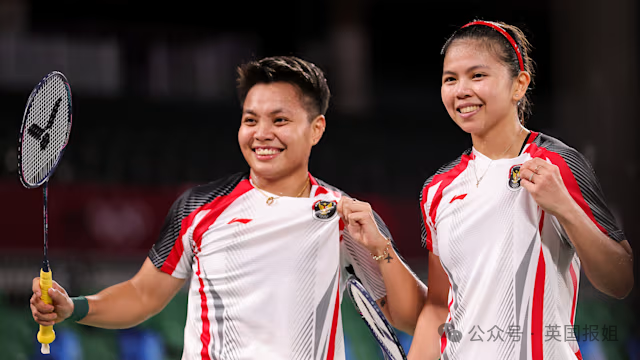
而在各国选手中，最期盼颁发奖励的非韩国的男选手们莫属了。
在这次巴黎奥运会7月30日的乒乓球混双奖牌赛中，韩国组合林钟勋/申裕斌获得铜牌。赛后，林钟勋兴奋到模糊的样子让人记忆犹新。
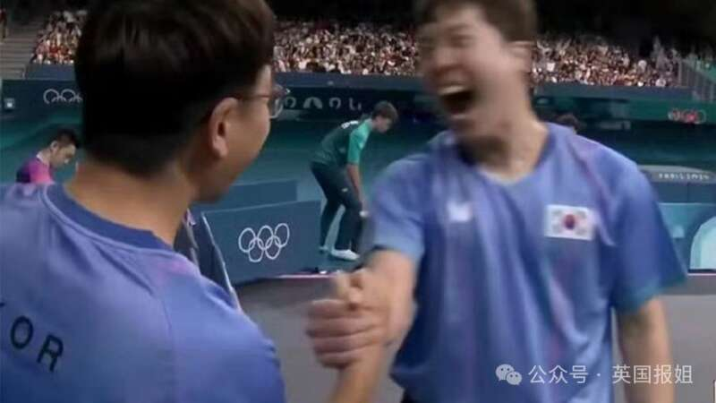
原来，在韩国律法中规定，运动员在奥运比赛中获得前三名可以免除兵役。而林钟勋的入伍时间在8月19日，赶在最后期限内拿到这枚高贵的铜牌，也让他成功从兵兵保级为乒乓。
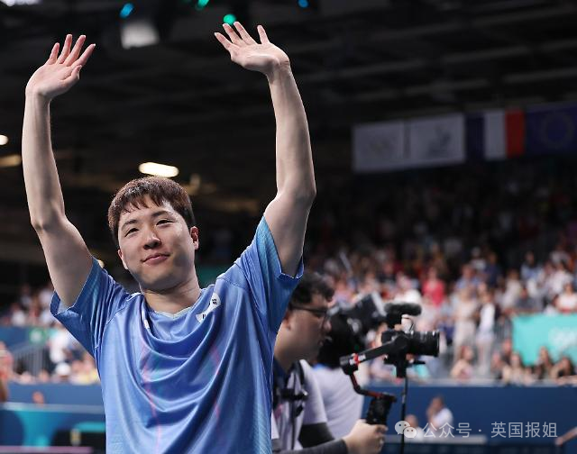
其实无论奖金和奖品是多是少，都是对于运动员过去十几年甚至几十年努力的肯定和赞美。同时，赞助商也借助奖牌效应获得了关注，怎么看都是一种双赢的正面案例。
不过也架不住网友们为运动员操心，帮他们盘算如何最大化的使用方案。毕竟这么多奖品，他们怎么用得完啊~